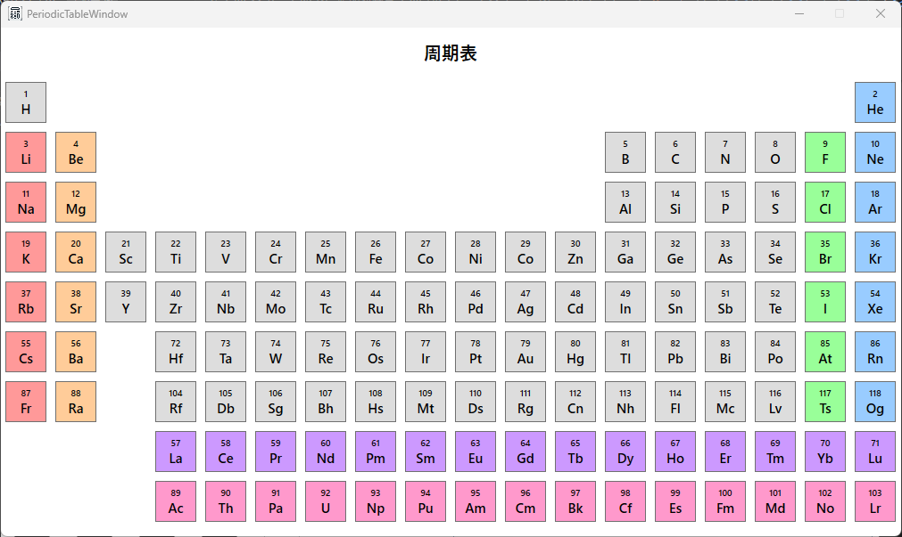
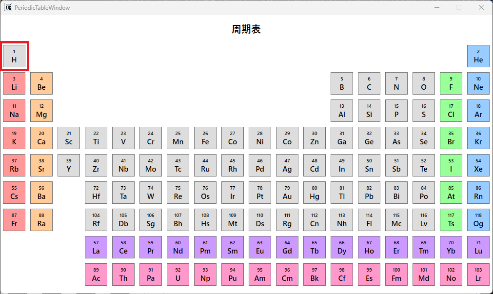
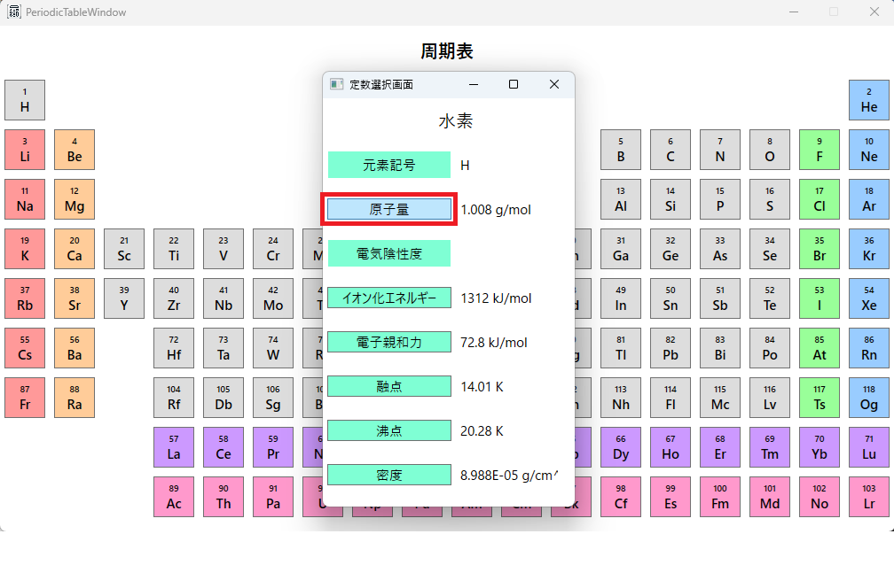
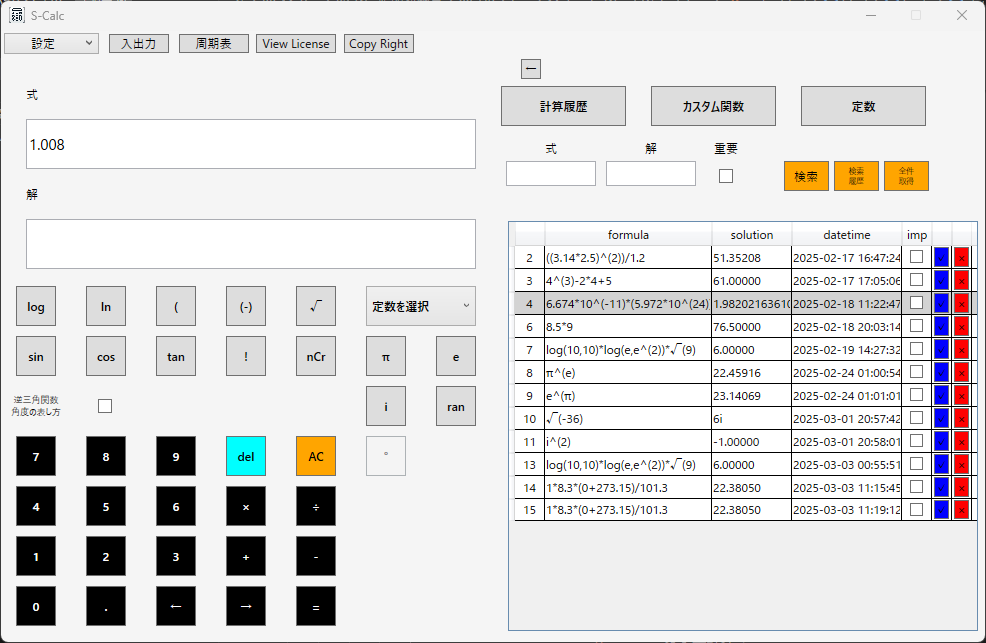
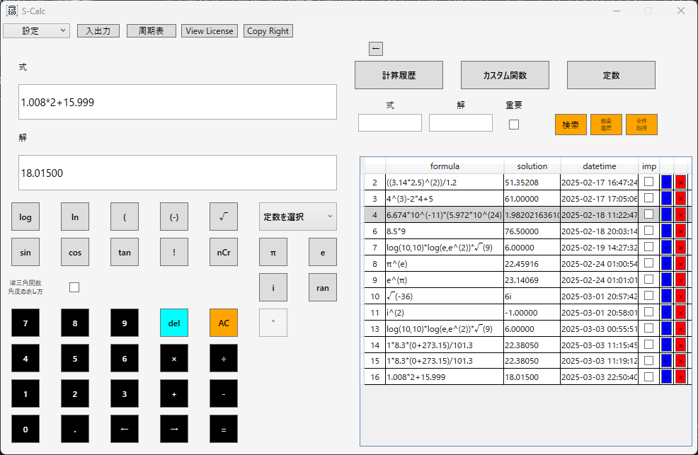
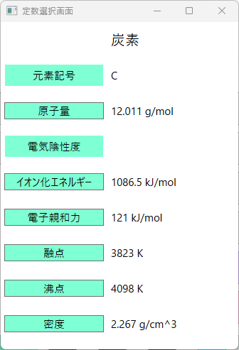
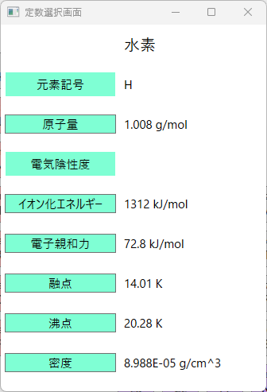
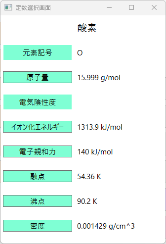
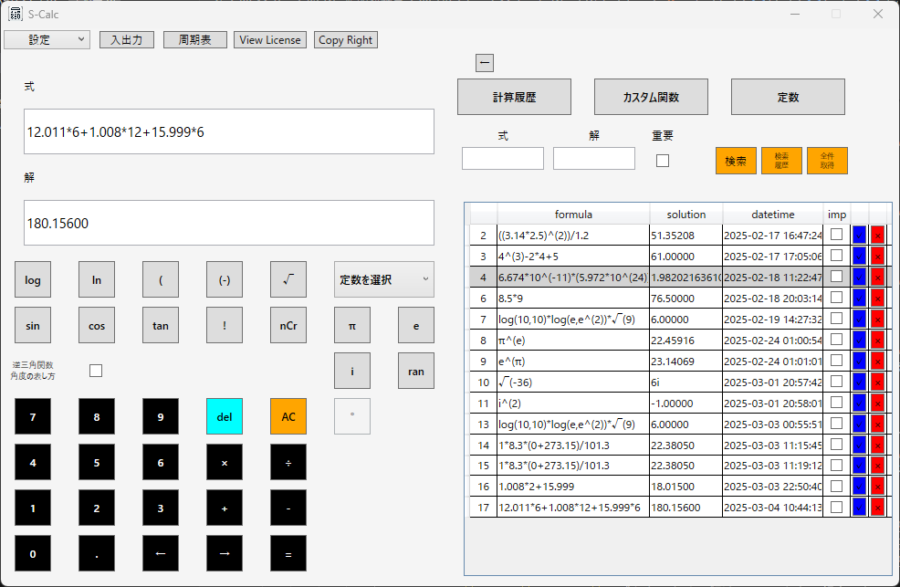
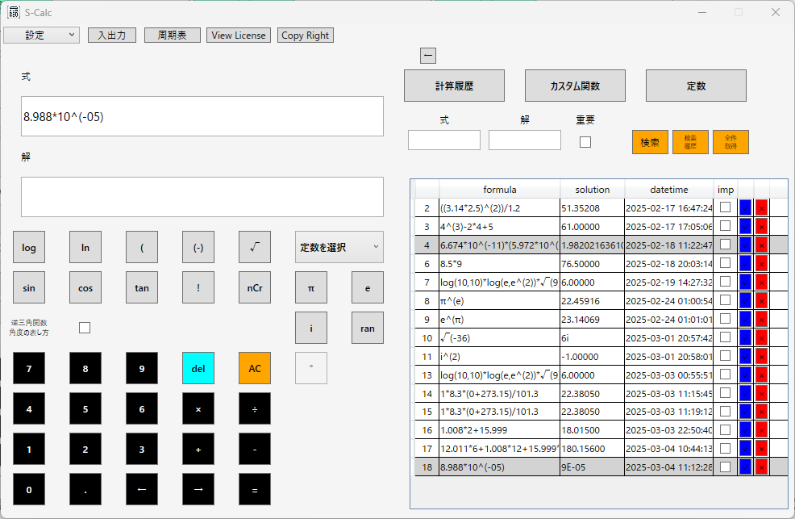

S-Calc 分子量計算の使い方
分子量計算 水の分子量を算出 グルコースの分子量を算出分子量計算
1.水（H2O）の分子量を算出する。

水（H2O）の分子量は水素2つと酸素1つの原子量の和となるため、それらを足し合わせる。

1.水素の原子量を得るため、周期表の水素ボタンを押下する。
2.表示されたダイアログから計算に使用する原子量のボタンを押下する。
3.メインの電卓画面に水素の原子量が入力されていることを確認。
4.水の分子式は水素が2つであるため、式テキストボックスに入力された水素の原子量を2倍し、酸素の原子量と足し合わせる。2.グルコース（C6H12O6）の分子量を算出する。
グルコース（C6H12O6）の分子量は炭素6つと水素12個と酸素6つの原子量の和となるため、それらを足し合わせる。



12.011×6+1.008×12+15.999×6の式となるため、解は180.156となる想定である。
S-Calcでの計算結果は以下の通り。

なお、上記画像のうち水素の密度の値にある「8.988E-05」という値は「8.988×10^(-5)」と同一の意味を持つため、以下のように式テキストボックスに入力される。
